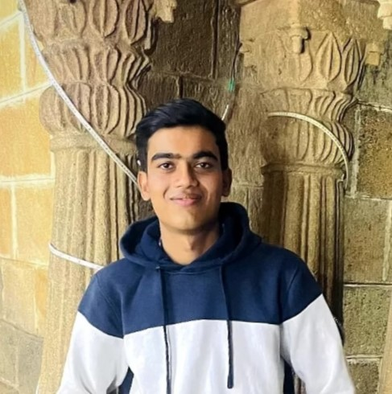

Mayur Pathe

Phone: +91-9399326050
Email: mayurpathe08@gmail.com
LinkedIn: mayur-pathe08
GitHub: mayur-pathe
Education
Lakshmi Narain College of Technology and Science,Bhopal
Bachelor of Technology in Computer Science and Engineering
with specialization in Cyber Security : CGPA - 8.51
Gyan Ganga Public School, Chhindwara
Senior Secondary (Class XII) : Percentage - 85
Gyan Ganga Public School, Chhindwara
Secondary (Class X) : Percentage - 81.4
Technical Projects
- Developed an AI-powered journaling website with features like daily journal writing, behavioral
customization, and real-time AI chat support.
- Implemented a responsive interface and robust back-end, enhancing user engagement and personalization.
- Tech Stack: HTML, CSS, JavaScript, Bootstrap, MongoDB, Node.js, Chat API.
- Developed a dynamic music player with features like play, pause, volume control, and track navigation.
- Implemented a responsive and visually appealing interface using Bootstrap for enhanced user
experience.
- Tech Stack: HTML, CSS, JavaScript, Bootstrap.
Skills And Interests
Programming language: Java, JavaScript, SQL.
Web Technologies and Tools: HTML, CSS, Bootstrap, GitHub, VS Code.
Subject Knowledge: DBMS, OOPs, SDLC, System Design,
Soft Skills: Communication, Time management, Adaptability.
Certifications
- IBM Cybersecurity Analyst by Coursera
- Cybersecurity Essentials by Cisco Networking Academy
- Career Essentials in Generative AI by Microsoft and LinkedIn
Extra Curricular Activites
Coordinator - Hacker's Cup Basic and Advance
- Organized programming competitions in college for 1st and 2nd year students.
- The contest was DSA and CP based, promoting the coding culture at college.
Activist - LNCT Cycling Club
- Organized and lead cycling event, rides and seminars.
- Building relationships with community and promoting a cycling-friendly culture.
Programming achievements